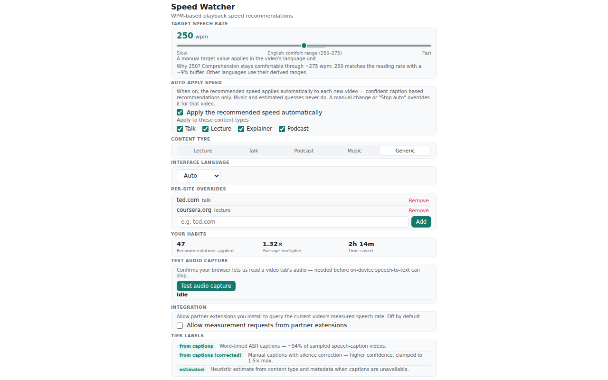

Speed Watcher
Recommends the playback speed that lands speech in the 250–275 wpm comfortable listening range — measured from the video's own captions, not guessed from content type.

How it works
Most speed tools adjust silently. Speed Watcher shows you the number: it reads the word-timed caption data a video already carries, computes the natural speech rate, and recommends the playback multiplier that lands your effective listening speed in the comfortable range. One click applies it, one click dismisses it — your manual speed is always respected.
1. Reads word-timed caption data from the video page — no network requests from the extension itself.
2. Computes the natural speech rate in wpm (or the language's own unit: characters, syllables, morae).
3. Recommends the exact playback multiplier to hit your target — a floating pill on the video, apply or dismiss with one click.
It slows down fast talkers instead of only ever speeding up, skips music so it's not miscounted as speech, and offers opt-in auto-apply for lectures, talks, explainers, and podcasts.
The science
250–275 wpm is a commonly cited comfortable listening range, not a comprehension guarantee. The rate model measures each language in its own unit — English is measured, non-English targets are labeled derived estimates, and 12 languages carry corpus-measured natural-rate priors. Full model and sources.
Install
| Surface | Where | Status |
|---|---|---|
| Chrome | Chrome Web Store | filling at launch |
| Firefox | Firefox Add-ons | filling at launch |
| Userscript | speed-watcher.user.js | ready — Tampermonkey / Violentmonkey |
| mpv | git clone or release source tarball | ready — see install notes below |
Ports
The same measurement and recommendation math ships as an mpv script and a userscript — one codebase across extension, desktop player, and store-free bundle.
mpv: put main.lua, rate.lua and
languages.lua from mpv/ into
~/.config/mpv/scripts/speed-watcher/ — main.lua
is the name that makes mpv load the directory as one script.
Ctrl+w measures, Ctrl+Shift+w applies,
Ctrl+Alt+w dismisses. Options go in
~/.config/mpv/script-opts/speed_watcher.conf.
Userscript: install speed-watcher.user.js into
Tampermonkey or Violentmonkey and visit a YouTube watch page.
Shift+W applies, Escape dismisses. Storage is
two GM keys; nothing leaves the browser.
Privacy
Everything runs locally — the extension reads captions from the page's own context and makes no outbound requests. No analytics, no telemetry. Full policy: Privacy Policy.